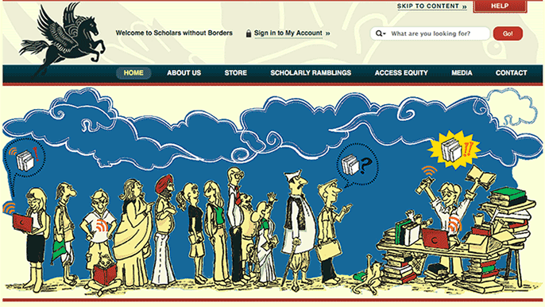
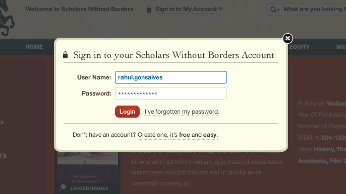
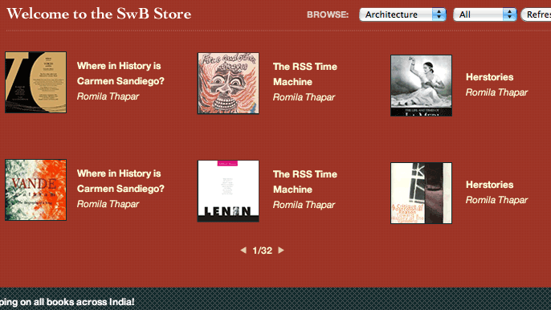
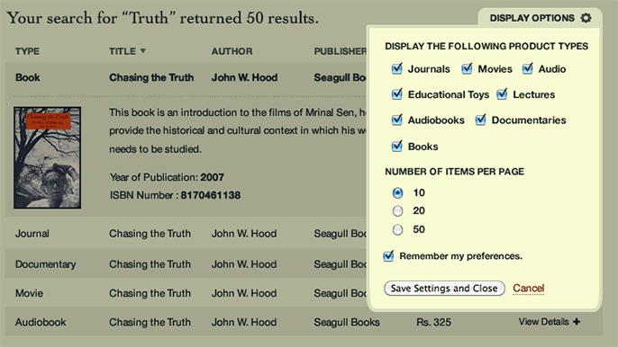
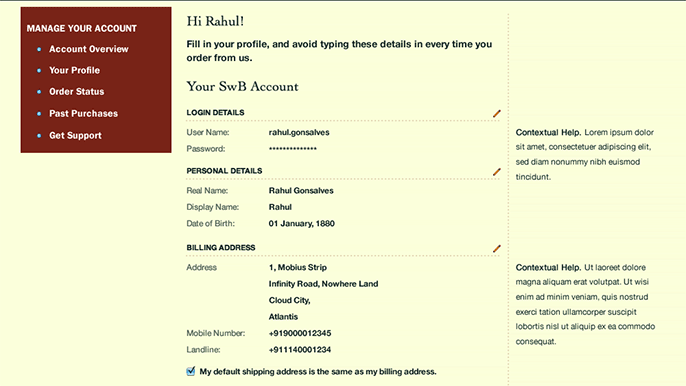

Scholars without Borders
Scholars wanted to replace their existing, aging website with an attractive, modern one.
We gave them a fresh new design based on identifying who their audiences were, what their goals were and to perhaps give visitors access to books which they may not have initially considered!




